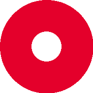

Pasang Balikin
Akses lebih cepat dari layar utama, bisa dipakai offline.
#TanpaResiko
Banyak aplikasi sejenis minta kamu login pakai akun Instagram — bahkan ada yang minta password langsung. Balikin sengaja dibikin nggak begitu.
Kebanyakan Aplikasi Sejenis
Balikin
Cuma pakai fitur ekspor data resmi dari Instagram (Accounts Center → Download your information) — bukan menjelekkan aplikasi tertentu, ini pola umum yang sering ditemui di aplikasi sejenis.
Langkah demi langkah
Menggunakan fitur ekspor resmi dari Instagram, jadi aman dan nggak melanggar aturan mereka. Ikuti urutan ini persis di aplikasi Instagram kamu.
Buka Accounts Center
Di profil Instagram, buka Settings → Accounts Center.
Your Information and Permissions
Cari dan ketuk menu ini di dalam Accounts Center.
Export Your Information
Pilih akun Instagram kamu, lalu ketuk "Create export".
Customize Information
Centang hanya Followers and following agar prosesnya lebih cepat.
Format: JSON
Pastikan format ekspor JSON, bukan HTML, agar dapat dibaca oleh sistem ini.
Tunggu Tautan Unduhan
Instagram akan mengirim notifikasi. Unduh file .zip yang diberikan.
Kamu bisa langsung upload file .zip hasil download itu di bawah — nggak perlu di-extract manual dulu.
Langkah terakhir
Drop file .zip hasil export, atau file followers_1.json / following.json satu-satu. Semua diproses langsung di perangkatmu.
Tarik file ke sini
atau klik untuk memilih file (.zip / .json)
Data kamu nggak pernah diunggah ke serverTanpa Login
Kamu nggak pernah masukin password Instagram di sini. Sistem ini cuma baca file yang kamu upload.
Diproses di Browser
Pembacaan dan perbandingan data berjalan 100% di perangkatmu. Nggak ada file yang terkirim ke server mana pun.
Sumber Resmi
Data berasal dari fitur ekspor resmi Instagram, bukan hasil scraping atau otomasi login.
Keputusan Swipe Tetap Lokal
Pilihan "unfollow / keep / nanti" dari Mode Swipe cuma tersimpan di localStorage browser kamu. Hapus lewat tombol "Hapus Data" kapan saja.